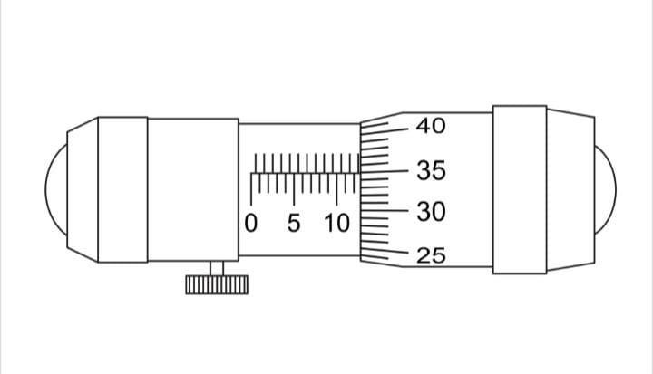
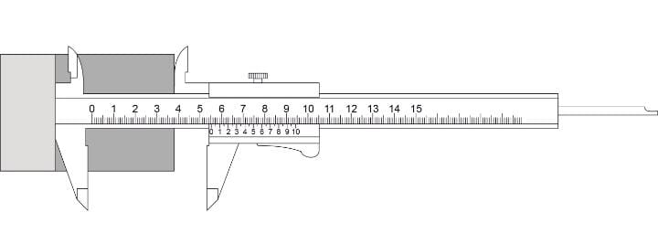
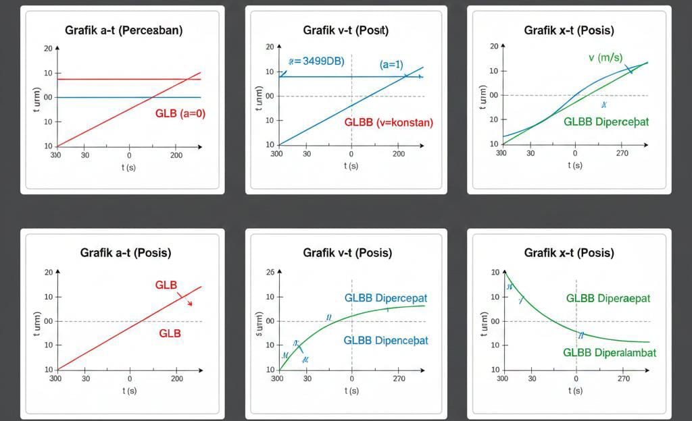

| No. Soal | Level Kognitif | Indikator Utama | Konsep Kunci |
|---|---|---|---|
| 1-3, 9, 12 | L1 | Menentukan Nilai Skala Terkecil (NST) dan Ketidakpastian Mutlak (Δx) |
Rumus: Δx = (1/2) × NST. NST adalah batas terkecil yang bisa dibaca alat. Contoh: Mikrometer Sekrup memiliki NST 0,01 mm, sehingga Δx = 0,005 mm. |
| 4-7, 10 | L1 | Menentukan Hasil Pengukuran Jangka Sorong, Mikrometer Sekrup, atau Neraca | Jangka Sorong: Hasil = Skala Utama + (Skala Nonius × NST 0,01 cm).   |
| 8, 11 | L2 | Menentukan Pernyataan Tepat terkait presisi dan hasil pengukuran | Presisi (Ketelitian) diukur dari NST terkecil. Mikrometer Sekrup > Jangka Sorong > Mistar. |
| No. Soal | Level Kognitif | Indikator Utama | Konsep Kunci |
|---|---|---|---|
| 13, 14, 15 | L2 | Menentukan besar Ketidakpastian Relatif (KR) |
Rumus:
KR = (Δx / Hasil Pengukuran) × 100%
|
| 16-20 | L1/L2 | Menentukan AP, Pembulatan, dan Operasi Hitung | Konsep inti dijelaskan pada sub-bagian di bawah ini. |
| No. Soal | Level Kognitif | Gerak/Indikator Utama | Konsep Kunci |
|---|---|---|---|
| 21, 22 (GLB) | L2 | Menentukan grafik v-t dan x-t yang tepat |
Ciri GLB: Kecepatan (v) konstan, a=0. Grafik v-t: Garis horizontal. Grafik x-t: Garis lurus miring ke atas. |
| 23 (GLB) | L1 | Menentukan besar kecepatan rata-rata |
Rumus:
v̄ = Δx / Δt
|
| 24, 25, 26 (GLBB) | L2 | Menentukan grafik a-t, v-t, dan x-t yang tepat |
Ciri GLBB: a konstan. Dipercepat (↑), Diperlambat (↓).  |
| 27, 28, 29 (GLBB) | L1/L2 | Menentukan vt, Jarak (Δx), dan v0 |
Rumus Kunci: 1. vt = v0 + a t (L1) 2. Δx = v0 t + (1/2) a t² 3. vt² = v0² + 2 a Δx (L2) |
| 30 (Perbandingan) | L2 | Menentukan perbandingan grafik v-t antara GLB dan GLBB | GLB: Garis horizontal konstan. GLBB: Garis miring. |